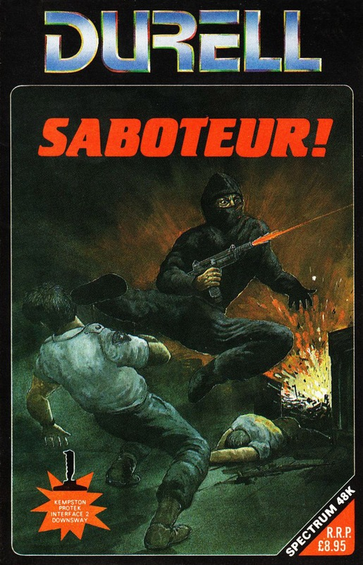
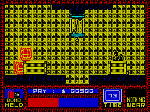

Saboteur


{kind=link}

| Publisher: | Durell |
| Price: | £8.95 |
| Year: | 1985 |
| Source: | CRASH, Issue 24 |

As a gun for hire you’ve been hired to liberate a computer disk held within a high security fortress cunningly disguised as a warehouse. The disk holds the names of a number of rebel leaders and you’re up against the clock. The idea is to find a bomb, hidden somewhere within the complex, get the disk and leave the bomb behind, ticking down to detonation. All this before the time limit expires and the information stored on the disk is sent to outlying terminals. Being a sensible sort of chap, you want to escape and there’s a helicopter lurking on the warehouse roof, just waiting to be stolen.
The trouble is that the headquarters are heavily guarded by a number of armed guards and watchdogs as well as automatic defence systems which monitor your position in a room and then start zapping you with a laser. Your mission starts in a rubber dinghy moored just off a small pier leading to one of the warehouse entrances. Clad totally in SAS attire, black jumpsuit and bootpolish all over your face, you are initially equipped with a throwing star. As you wander through the security complex various other weapons can be found, picked up and used — each weapon can be used once only, but can be aimed at your target. Trained to a very high degree in various martial arts, you can also partake in a bit of physical baddie bashing rather than just lobbing the odd throwing star or brick about. You have a choice too: a killer punch or a ninja style dropkick are both equally deadly to any guards you may find.

The security complex is split among three different sections. The first is the warehouse front, containing the helicopter and primary defence force. If you get down into the sewers then you can link up to the underground train taking you into the first part of the computer centre. From here the second underground train has to be found to get you into the second computer centre. This is where the disk and bomb are held. Once the disk has been rescued and the bomb primed a countdown starts showing the remaining time in which to reach the helicopter. A quick dash back through the sewers and train systems is required unless you like having dead mercenary smeared all over the walls.
Whilst bashing your way through various adversaries your progress is charted via two screens, the main screen shows a sideview of the room you are in. Your saboteur is about a quarter of the screen high and sproings and cavorts about in full animation. As well as running and fighting he can also perform a nifty tuck jump for bouncing over chasms and gaps. Using the ladders, platforms or steps provided, your hero travels around the complex of colour coded levels.
The bottom quarter of the screen is used to display your status. Only one object can be held at a time, the object you’re holding appearing in a window on the left hand corner of the status area, while objects close by and available for collection are shown in the window to the right side of this screen. Pressing fire uses the object within your grasp, or if another object is within reach it’ll be transferred into your possession.
An energy bar along the bottom of the screen shows how your energy level is faring. Your lifeforce is sapped by contact with fighting guards, who fire rubber bullets, guard dogs, which bite, and the laser defence system which is generally bad for your health. Standing about doing nothing for a while, however, allows ebbing energy force to return.
The game isn’t played for points — what self respecting mercenary works for points? Money’s the name of the game; and a paymeter clocks up a few hundred dollars each time you do for a guard. The big money is only picked up for collecting the disk in the time limit, planting the bomb, and escaping. The programmer’s obviously a dog lover, though. There’s no money in killing dogs — “so why bother?” the inlay reminds you.
CRITICISM
‘Though bearing some initial resemblance to Impossible Mission, Saboteur holds a lot more upon further inspection. The game is absolutely great, it’s like playing a part in a Bond movie. Maybe this is the sort of game that should have been used by Domark. Level one is quite easily solved, given a bit of time and thought, but there are nine different levels each subtly harder than the last. The animation of the man is great and he’s very responsive indeed. Overall a this deserves to be a hit and should have pride of place on many a Spectrum users shelf.’
‘After Critical Mass I was expecting great things from Durell and they’ve certainly come up with the goods. Saboteur must be one of the most original games of ’85. The drawing point of this type of game is that it puts you in the shoes of a hero/spy just like Spy vs Spy and when you walk you crouch down just as if you were an intruder. The overall game is very addictive due to the variety of routes you have to take on the higher levels. Great use is made of colour — the characters are huge, with no attribute problems at all. One thing that made me laugh was the so called ‘underground train’, it really does look like a brilliant picture of a holiday caravan. I hope Durell gets a CRASH Smash for this ’cos it certainly deserves it.’
‘Durell Software really have pulled their act together this year. After a couple of years of mundane releases they’re now producing classics like Saboteur. The game concept is fairly original, and as such the game is quite fun to play but what really put Saboteur up in my esteem was its sheer playability. Graphically the main sprite is a bit similar to the one in Impossible Mission but his range of movement is far greater. Overall the best release yet from Durell and one of the better releases for the Spectrum this year.’
COMMENTS
| Control keys: | Definable |
| Joystick: | Kempston, Interface II |
| Keyboard play: | Extremely responsive, adds to the excitement |
| Use of colour: | Mostly monochromatic, but still effective |
| Graphics: | Lovely animation, though backgrounds could do with some more detail |
| Sound: | Pretty neat two channel tune once loaded, and effective white noise during the game |
| Skill levels: | 9 |
| Screens: | 118 |
| General rating: | Very imaginative: deserves star status |
| Use of computer: | 84% |
| Graphics: | 92% |
| Playability: | 92% |
| Getting started: | 91% |
| Addictive qualities: | 94% |
| Value for money: | 92% |
| Overall: | 93% |